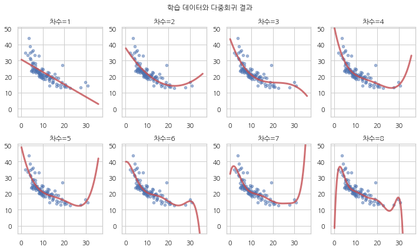
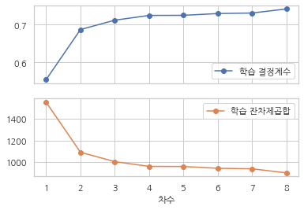
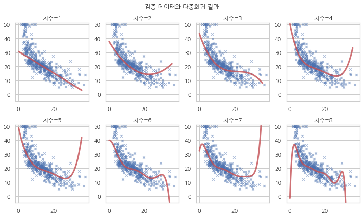
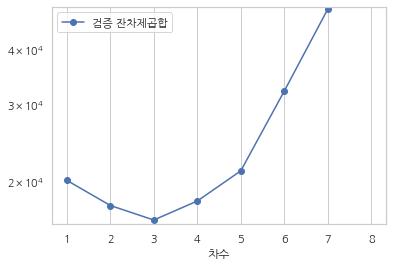

과최적화와 정규화
3.11. 과최적화와 정규화#
import statsmodels.api as sm
boston = sm.datasets.get_rdataset("Boston", "MASS").data
boston_train = boston.iloc[:100]
boston_test = boston.iloc[100:]
N = 8
x_name = "lstat"
formula = f"medv ~ scale({x_name})"
result1 = sm.OLS.from_formula(formula, boston_train).fit()
results = {1: result1}
for i in range(2, N + 1):
formula += f" + scale(I({x_name} ** {i}))"
result_i = sm.OLS.from_formula(formula, boston_train).fit()
results[i] = result_i
import pandas as pd
def plot_train(results, i, subplot):
r_i = results[i]
x = pd.DataFrame({x_name: np.linspace(0.1, 35.9, 100)})
y = r_i.get_prediction(x).summary_frame()
plt.subplot(*subplot)
plt.scatter(boston_train[x_name], boston_train["medv"], marker='o', s=20, alpha=0.5)
plt.plot(x[x_name].values, y["mean"].values, lw=3, alpha=0.8, c="r")
plt.ylim(-5, 51)
plt.title(f"차수={i}")
plt.figure(figsize=(14, 8))
for i in range(1, 9):
plot_train(results, i, [2, 4, i])
plt.suptitle("학습 데이터와 다중회귀 결과")
plt.tight_layout()
plt.show()

df_rss = pd.DataFrame.from_records(
[(i, r.rsquared, r.ssr) for i, r in results.items()],
columns=["차수", "학습 결정계수", "학습 잔차제곱합"]
).set_index("차수")
df_rss.style.bar()
| 학습 결정계수 | 학습 잔차제곱합 | |
|---|---|---|
| 차수 | ||
| 1 | 0.553373 | 1553.790601 |
| 2 | 0.686105 | 1092.022691 |
| 3 | 0.710969 | 1005.522571 |
| 4 | 0.723554 | 961.739072 |
| 5 | 0.723823 | 960.802511 |
| 6 | 0.728595 | 944.200845 |
| 7 | 0.729950 | 939.488687 |
| 8 | 0.740790 | 901.775330 |
df_rss.plot(y=["학습 결정계수", "학습 잔차제곱합"], marker="o", subplots=True)
plt.show()

def plot_test(results, i, subplot):
r_i = results[i]
x = pd.DataFrame({x_name: np.linspace(0.1, 35.9, 100)})
y = r_i.get_prediction(x).summary_frame()
plt.subplot(*subplot)
plt.scatter(boston_test[x_name], boston_test["medv"], marker='x', s=20, alpha=0.5)
plt.plot(x[x_name].values, y["mean"].values, lw=3, alpha=0.8, c="r")
plt.ylim(-5, 51)
plt.title(f"차수={i}")
plt.figure(figsize=(14, 8))
for i in range(1, 9):
plot_test(results, i, [2, 4, i])
plt.suptitle("검증 데이터와 다중회귀 결과")
plt.tight_layout()
plt.show()

rss_test = []
for i, r in results.items():
y_true = boston_test.medv
y_pred = r.get_prediction(boston_test).predicted_mean
rss_test.append(((y_true - y_pred) ** 2).sum())
df_rss["검증 잔차제곱합"] = rss_test
df_rss[["검증 잔차제곱합"]].style.bar()
| 검증 잔차제곱합 | |
|---|---|
| 차수 | |
| 1 | 20145.399074 |
| 2 | 17656.438628 |
| 3 | 16362.769041 |
| 4 | 18075.527274 |
| 5 | 21171.613313 |
| 6 | 32154.412838 |
| 7 | 49392.894713 |
| 8 | 5070235.057569 |
df_rss.plot(y=["검증 잔차제곱합"], logy=True, marker="o")
plt.ylim(1.6e4, 5e4)
plt.show()
